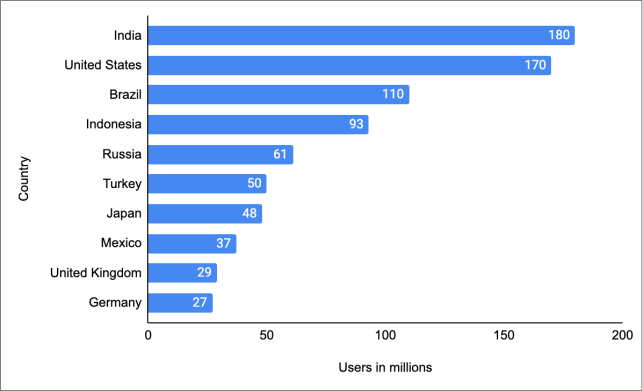
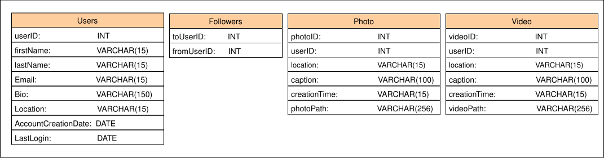
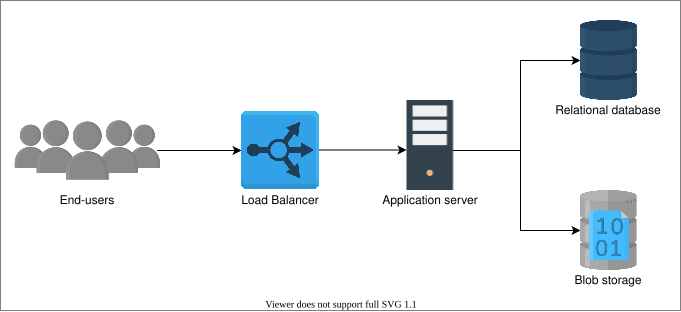
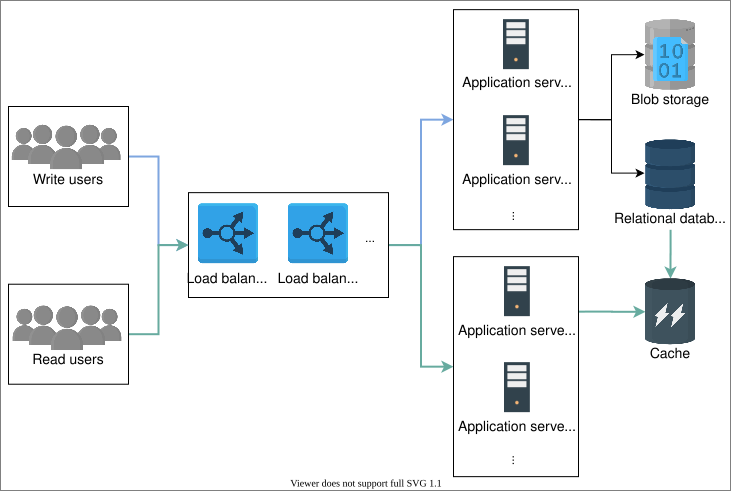

33. Design Instagram
System Design: Instagram
System Design: Instagram
Get introduced to Instagram to kickstart its design.
We'll cover the following
What is Instagram?#
Instagram is a free social networking application that allows users to post photos and short videos. Users can add a caption for each post and utilize hashtags or location-based geotags to index them and make them searchable within the application. A user’s Instagram posts display in their followers’ feeds and can be seen by the general public if they are tagged with hashtags or geotags. Alternatively, users can choose to make their profile private, which limits access to those who have chosen to follow them.
The expansion in the number of users requires more resources (servers, databases, and so on) over time. Knowing the users’ growth rate helps us predict the resources to scale our system accordingly. The following illustration shows the Instagram user base in different countries as of January 2022 (source: Statista).

How will we design Instagram?#
We have divided the design of Instagram into four lessons:
- Requirements: This lesson will put forth the functional and non-functional requirements of Instagram. It will also estimate the resources required to achieve these requirements.
- Design: This lesson will explain the workflow and usage of each component, API design and database schema.
- Detailed design: In this lesson, we’ll explore the components of our Instagram design in detail and discuss various approaches to generate timelines. Moreover, we’ll also evaluate our proposed design.
- Quiz: This lesson will test our understanding of the Instagram design.
Let’s start by understanding the requirements for designing our Instagram system and provide resource estimations in the next lesson.
Requirements of Instagram’s Design
Requirements of Instagram’s Design
Learn about the requirements and computational needs for the Instagram service.
Requirements#
We’ll concentrate on some important features of Instagram to make this design simple. Let’s list down the requirements for our system:
Functional requirements#
-
Post photos and videos: The users can post photos and videos on Instagram.
-
Follow and unfollow users: The users can follow and unfollow other users on Instagram.
-
Like or dislike posts: The users can like or dislike posts of the accounts they follow.
-
Search photos and videos: The users can search photos and videos based on captions and location.
-
Generate news feed: The users can view the news feed consisting of the photos and videos (in chronological order) from all the users they follow. Users can also view suggested and promoted photos in their news feed.
Non-functional requirements#
-
Scalability: The system should be scalable to handle millions of users in terms of computational resources and storage.
-
Latency: The latency to generate a news feed should be low.
-
Availability: The system should be highly available.
-
Durability Any uploaded content (photos and videos) should never get lost.
-
Consistency: We can compromise a little on consistency. It is acceptable if the content (photos or videos) takes time to show in followers’ feeds located in a distant region.
-
Reliability: The system must be able to tolerate hardware and software failures.
Resource estimation#
Our system is read-heavy because service users spend substantially more time browsing the feeds of others than creating and posting new content. Our focus will be to design a system that can fetch the photos and videos on time. There is no restriction on the number of photos or videos that users can upload, meaning efficient storage management should be a primary consideration in the design of this system. Instagram supports around a billion users globally who share 95 million photos and videos on Instagram per day. We’ll calculate the resources and design our system based on the requirements.
Let’s assume the following:
-
We have 1 billion users, with 500 million as daily active users.
-
Assume 60 million photos and 35 million videos are shared on Instagram per day.
-
We can consider 3 MB as the maximum size of each photo and 150 MB as the maximum size of each video uploaded on Instagram.
-
On average, each user sends 20 requests (of any type) per day to our service.
Storage estimation#
We need to estimate the storage capacity, bandwidth, and the number of servers to support such an enormous number of users and content.
The storage per day will be:
60 million photos/day * 3 MB = 180 TeraBytes / day
35 million videos/day * 150 MB = 5250 TB / day
Total content size = 180 + 5250 = 5430 TB
The total space required for a year:
5430 TB/day * 365 (days a year) = 1981950 TB = 1981.95 PetaBytes
Besides photos and videos, we have ignored comments, status sharing data, and so on. Moreover, we also have to store users’ information and post metadata, for example, userID, photo, and so on. So, to be precise, we need more than 5430 TB/day, but to keep our design simple, let’s stick to the 5430 TB/day.
Bandwidth estimation#
According to the estimate of our storage capacity, our service will get 5430 TB of data each day, which will give us:
5430 TB/(24 * 60* 60) = 5430 TB/86400 sec ~= 62.84 GB/s ~= 502.8 Gbps
Since each incoming photo and video needs to reach the users’ followers, let’s say the ratio of readers to writers is 100:1. As a result, we need 100 times more bandwidth than incoming bandwidth. Let’s assume the following:
Incoming bandwidth ~= 502.8 Gbps
Required outgoing bandwidth ~= 100 * 502.8 Gbps ~= 50.28 Tbps
Outgoing bandwidth is fairly high. We can use compression to reduce the media size substantially. Moreover, we’ll place content close to the users via CDN and other caches in IXP and ISPs to serve the content at high speed and low latency.
Number of servers estimation#
We need to handle concurrent requests coming from 500 million daily active users. Let’s assume that a typical Instagram server handles 100 requests per second:
Requests by each user per day = 20 Queries handled by a server per second = 100
Queries handled by a server per day = 100 * 60 * 60 * 24 = 8640000
Queries handled per server a dayNumber of active users∗Requests by each user per day=1157 servers approx
This calculation shows that we need 1157 servers to handle queries in our Instagram system.
Try it yourself#
Let’s analyze how the number of photos per day affects the storage and bandwidth requirements. For this purpose, try to change values in the following table to compute the estimates. We have set 20 requests by each user per day in the following calculation:
| Requirements | Calculations |
| Number of photos per day (in millions) | 60 |
| Size of each photo (in MB) | 3 |
| Number of videos per day (in millions) | 35 |
| Size of each video (in MB) | 150 |
| Number of daily active users (in millions) | 500 |
| Number of requests a server can handle per day | 8640000 |
| Storage estimation per day (in TB) | f5430 |
| Incoming bandwidth (Gb/s) | f502.8 |
| Number of servers needed | f1157 |
Building blocks we will use#
In the next lesson, we’ll focus on the high-level design of Instagram. The design will utilize many building blocks that have been discussed in the initial chapters also. We’ll use the following building blocks in our design:
- A load balancer at various layers will ensure smooth requests distribution among available servers.
- A database is used to store the user and accounts metadata and relationship among them.
- Blob storage is needed to store the various types of content such as photos, videos, and so on.
- A task scheduler schedules the events on the database such as removing the entries whose time to live exceeds the limit.
- A cache stores the most frequent content related requests.
- CDN is used to effectively deliver content to end-users which reduces delay and burden on end-servers.
In the next lesson, we’ll discuss the high-level design of the Instagram system.
Design of Instagram
Design of Instagram
Learn the high-level design of Instagram and understand its data model.
High-level design#
Our system should allow us to upload, view, and search images and videos at a high level. To upload images and videos, we need to store them, and upon fetching, we need to retrieve the data from the storage. Moreover, the users should also be allowed to follow each other.

API design#
This section describes APIs invoked by the users to perform different tasks (upload, like, and view photos/videos) on Instagram. We’ll implement REST APIs for these tasks. Let’s develop APIs for each of the following features:
- Post photos and videos
- Follow and unfollow users
- Like or dislike posts
- Search photos and videos
- Generate a news feed
All of the following calls will have a userID, that uniquely specifies the user performing the action. We’ll only discuss new parameters in the calls.
Post photos or videos#
The POST method is used to post photos/videos to the server from the user through the /postMedia API. The /postMedia API is as follows:
postMedia(userID, media_type, list_of_hashtags, caption)
Parameter | Description |
| It indicates the type of media (photo or video) in a post. |
| It represents all hashtags (maximum limit 30 hashtags) in a post. |
| It is a text (maximum limit is 2,200 characters) in a user’s post. |
Follow and unfollow users#
The /followUser API is used when a user follows other users on Instagram. The /followUser API is as follows:
followUser(userID, target_userID)
Parameter | Description |
| It indicates the user to be followed. |
The /unfollowUser API uses the same parameters when a user unfollows someone on Instagram.
Like or dislike posts#
The /likePost API is used when users like someone’s post on Instagram.
likePost(userID, target_userID, post_id)
Parameter | Description |
| It specifies the user whose post is liked. |
| It specifies the post's unique ID. |
The /dislikePost API uses the same parameters when a user dislikes someone’s post on Instagram.
Search photos or videos#
The GET method is used when the user searches any photos or videos using a keyword or hashtag. The /searchPhotos API is as follows:
searchPhotos(userID, keyword)
Parameter | Description |
| It indicates the string (username, hashtag, and places) typed by the user in the search bar. |
Note: Instagram shows the posts with the highest reach (those with more likes and views) upon searching for a particular key. For example, if a user does a location-based search using “London, United Kingdom," Instagram will show the posts in order with maximum to minimum reach. Instead of showing all the posts, the data will be loaded upon scrolling.
Generate news feed#
The GET method is used when users view their news feed through the /viewNewsfeed API. The /viewNewsfeed API is as follows:
viewNewsfeed(userID, generate_timeline)
Parameter | Description |
| It indicates the time when a user requests news feed generation. Instagram shows the posts that are not seen by the user between the last news feed request and the current news feed request. |
Storage schema#
Let’s define our data model now:
Relational or non-relational database#
It is essential to choose the right kind of database for our Instagram system, but which is the right choice — SQL or NoSQL? Our data is inherently relational, and we need an order for the data (posts should appear in chronological order) and no data loss even in case of failures (data durability). Moreover, in our case, we would benefit from relational queries like fetching the followers or images based on a user ID. Hence, SQL-based databases fulfill these requirements.
So, we’ll opt for a relational database and store our relevant data in that database.
Define tables#
On a basic level, we need the following tables:
-
Users: This stores all user-related data such as ID, name, email, bio, location, date of account creation, time of the last login, and so on.
-
Followers: This stores the relations of users. In Instagram, we have a unidirectional relationship, for example, if user A accepts a follow request from user B, user B can view user A’s post, but vice versa is not valid.
-
Photos: This stores all photo-related information such as ID, location, caption, time of creation, and so on. We also need to keep the user ID to determine which photo belongs to which user. The user ID is a foreign key from the users table.
-
Videos: This stores all video-related information such as ID, location, caption, time of creation, and so on. We also need to keep the user ID to determine which video belongs to which user. The user ID is a foreign key from the users table.
Point to Ponder
Question
Where should we store the photos and videos?
The following illustration visualizes the data model:

Data estimation#
Let’s figure out how much data each table will store. The column per row size (in bytes) in the following calculator shows the data per row of each table. It also calculates the storage needed for the specified counts. For example, the storage required for 500 million users is 111000 MB, 2000 MB for 250 followers of a single user, 23640 MB for 60 million photos, and 13790 MB for 35 million videos.
You can change the values in the calculator to observe the change in storage needed. This gives us an estimate of how fast data will increase in our tables.
| Table Name | Per row size (in bytes) | Count in Millions | Storage Needed (in MBs) |
| Users | 222 | 500 | f111000 |
| Followers | 8 | 250 | f2000 |
| Photos | 394 | 60 | f23640 |
| Videos | 394 | 35 | f13790 |
Note: Most modern services use both SQL and NoSQL stores. Instagram officially uses a combination of SQL (PostgreSQL) and No-SQL (Cassandra) databases. The loosely structured data like timeline generation is usually stored in No-SQL, while relational data is saved in SQL-based storage.
In the next lesson, we’ll identify more components to tweak our design.
Detailed Design of Instagram
Detailed Design of Instagram
Explore the design of Instagram in detail and understand the interaction of various components.
Add more components#
Let’s add a few more components to our design:
-
Load balancer: To balance the load of the requests from the end-users.
-
Application servers: To host our service to the end-users.
-
Relational database: To store our data.
-
Blob storage: To store the photos and videos uploaded by the users.

Upload, view, and search a photo#
The client requests to upload the photo, load balancer passes the request to any of the application servers, which adds an entry to the database. An update that the photo is stored successfully is sent to the user. If an error is encountered, the user is communicated about it as well.
The photo viewing process is also similar to the above-mentioned flow. The client requests to view a photo, and an appropriate photo that matches the request is fetched from the database and shown to the user. The client can also provide a keyword to search for a specific image.
The read requests are more than write requests and it takes time to upload the content in the system. It is efficient if we separate the write (uploads) and read services. The multiple services operated by many servers handle the relevant requests. The read service performs the tasks of fetching the required content for the user, while the write service helps upload content to the system.
We also need to cache the data to handle millions of reads. It improves the user experience by making the fetching process fast. We’ll also opt for lazy loading, which minimizes the client’s waiting time. It allows us to load the content when the user scrolls and therefore save the bandwidth and focus on loading the content the user is currently viewing. It improves the latency to view or search a particular photo or video on Instagram.
The updated design is as follows:

Generate a timeline#
Now our task is to generate a user-specific timeline. Let’s explore various approaches and the advantages and disadvantages to opt for the appropriate strategy.
The pull approach#
When a user opens their Instagram, we send a request for timeline generation. First, we fetch the list of people the user follows, get the photos they recently posted, store them in queues, and display them to the user. But this approach is slow to respond as we generate a timeline every time the user opens Instagram.
We can substantially reduce user-perceived latency by generating the timeline offline. For example, we define a service that fetches the relevant data for the user before, and as the person opens Instagram, it displays the timeline. This decreases the latency rate to show the timeline. Let’s take a look at the slides below to understand the problem and its solution.
Point to Ponder
Question
What are the shortcomings of the pull approach?
The push approach#
In a push approach, every user is responsible for pushing the content they posted to the people’s timelines who are following them. In the previous approach, we pulled the post from each follower, but in the current approach, we push the post to each follower.
Now we only need to fetch the data that is pushed towards that particular user to generate the timeline. The push approach has stopped a lot of requests that return empty results when followed users have no post in a specified time.

Point to Ponder
Question
What are the shortcomings of the push approach?
Hybrid approach#
Let’s split our users into two categories:
-
Push-based users: The users who have a followers count of hundreds or thousands.
-
Pull-based users: The users who are celebrities and have followers count of a hundred thousand or millions.
The timeline service pulls the data from pull-based followers and adds it to the user’s timeline. The push-based users push their posts to the timeline service of their followers so the timeline service can add to the user’s timeline.

We have used the method which generates the timeline, but where do we store the timeline? We store a user’s timeline against a userID in a key-value store. Upon request, we fetch the data from the key-value store and show it to the user. The key is userID, while the value is timeline content (links to photos and videos). Because the storage size of the value is often limited to a few MegaBytes, we can store the timeline data in a blob and put the link to the blob in the value of the key as we approach the size limit.
We can add a new feature called story to our Instagram. In the story feature, the users can add a photo that stays available for others to view for 24 hours only. We can do this by maintaining an option in the table where we can store a story’s duration. We can set it to 24 hours, and the task scheduler deletes the entries whose time exceeds the 24 hours limit.
Finalized design#
We’ll also use CDN (content delivery network) in our design. We can keep images and videos of celebrities in CDN which make it easier for the followers to fetch them. The load balancer first routes the read request to the nearest CDN, if the requested content is not available there, then it forwards the request to the particular read application server (see the “load balancing chapter” for the details). The CDN helps our system to be available to millions of concurrent users and minimizes latency.
The final design is given below:

Point to Ponder
Question
How can we count millions of interactions (like or view) on a celebrity post?
Ensure non-functional requirements#
We evaluate the Instagram design with respect to its non-functional requirements:
-
Scalability: We can add more servers to application service layers to make the scalability better and handle numerous requests from the clients. We can also increase the number of databases to store the growing users’ data.
-
Latency: The use of cache and CDNs have reduced the content fetching time.
-
Availability: We have made the system available to the users by using the storage and databases that are replicated across the globe.
-
Durability: We have persistent storage that maintains the backup of the data so any uploaded content (photos and videos) never gets lost.
-
Consistency: We have used storage like blob stores and databases to keep our data consistent globally.
-
Reliability: Our databases handle replication and redundancy, so our system stays reliable and data is not lost. The load balancing layer routes requests around failed servers.
Conclusion#
This design problem highlights that we can provide major services by connecting our building blocks appropriately. The scalable and fault-tolerant building blocks enable us to concentrate on use-case-specific issues (such as the efficient formation of timelines).
Quiz on Instagram’s Design
Quiz on Instagram’s Design
Test your understanding of the concepts related to the design of the instagram via a quiz.
Quiz
If we opt for a NoSQL database to store Instagram data, which of the non-functional requirements would be easier to fulfill?
A)
Availability
B)
Scalability
C)
Reliability
D)
Latency